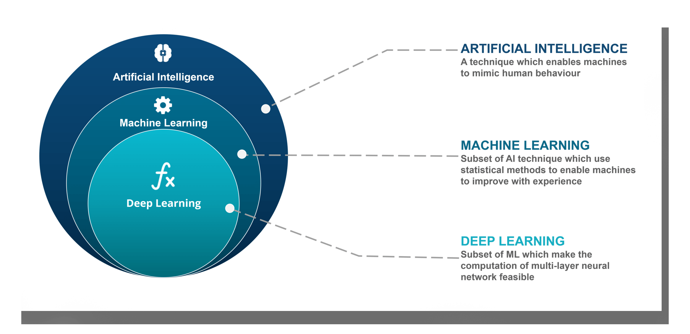

Machine Learning
Machine learning (ML) is the study of computer algorithms that improve automatically through experience. It is seen as a part of artificial intelligence. Machine learning algorithms build a model based on sample data, known as "training data", in order to make predictions or decisions without being explicitly programmed to do so. Machine learning algorithms are used in a wide variety of applications, such as email filtering and computer vision, where it is difficult or unfeasible to develop conventional algorithms to perform the needed tasks.
First, I'd like to clarify the difference between machine learning, AI, deep learning, neutral network.
From there, we know that machine learning is the part of AI that can use statistical methods to enable machines to improve.
Now, we will see what machine learning is through examplers, that will help for you understanding.
Hope you enjoy this example. We've seen this problem a lot of times, including math, physics, etc. However, do you believe that it is a machine learning problem. It is, because it fit the criterion. Computer wants to calculate the best fit line through the data point.
This exampler is much more advanced, it shows the neutral network in machine learning. Moreover, tensorflow is the most popular frame of machine learning. But don't worried, we will deconposite all of these, and shows the key idea of machine learning in next section.